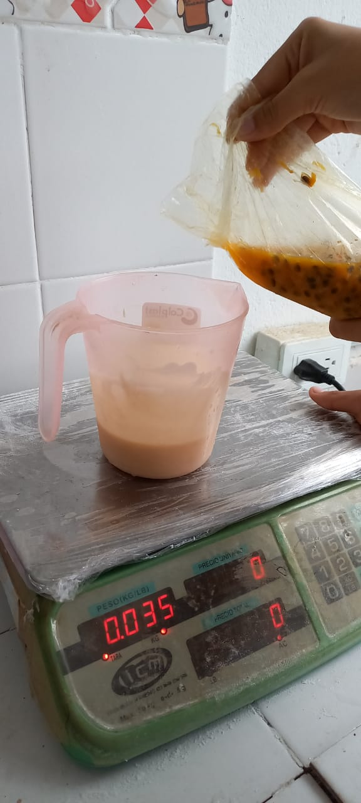

TIRAMISU
Este es un exquisito postre a base de queso crema, crema de leche galletas dulces, azucar y por supuesto un delicioso sabor a cafe o maracuya.
nuestros sabores
nuestro producto cuenta con dos deliciosos sabores, los cuales son el sabor natural del cafe y la maracuya
aunque ya contamos con dos sabores establecidos, aun tenemos el objetivo de crear postres tiramisu de otros muchos sabores.
nuestros precios
nuestros postres de tiramisu cuenta con dos tamaños los cuales son:
grande
- maracuya $5.500
- cafe $5.000
pequeño
- maracuya $3.000
- cafe $2.500
imagenes de procesamiento del producto
aqui te puedes dar cuenta que nuestro producto es 100% inocuo ya que tenemos unas buenas practicas de manufactura y contamos con el sistema haccp
